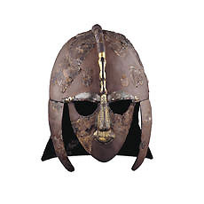
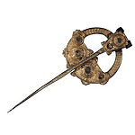
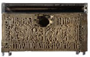
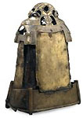

Department of Medieval and Modern Europe > galleries > Room 41
The
Early Medieval Gallery
|  |
Please note that this Gallery is scheduled for a major refurbishment from August 2001 to November 2002. The programme of works in the gallery and the preparation of display material will involve significant disruptions to the existing displays throughout this period; we will aim to keep these to the minimum possible, but if you intend making a special visit to see a particular object or part of this exhibition, we would advise you to telephone the Departmental enquiry line, 020 7323 8269 for current information on the displays. The
Early Medieval Gallery |
|  |  |  |
More
galleries: 41 | 42
| 43 | 44 | 45
| 46 | 47 | 48